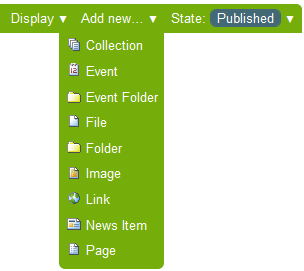
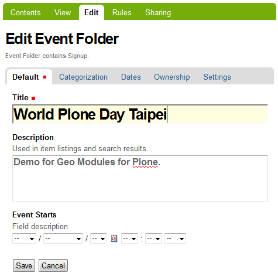
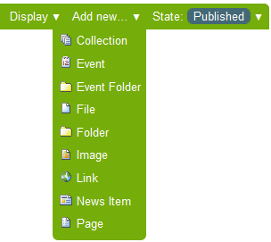
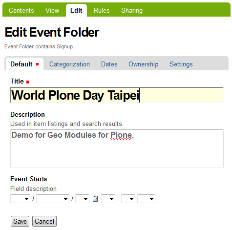

感謝您對「自由軟體鑄造場」的支持與愛護，十多年來「自由軟體鑄造場」受中央研究院支持，並在資訊科學研究所以及資訊科技創新研究中心執行，現已完成階段性的任務。 原網站預計持續維運至 2021年底，網站內容基本上不會再更動。本網站由 Denny Huang 備份封存。
也紀念我們永遠的朋友 李士傑先生（Shih-Chieh Ilya Li）。
也紀念我們永遠的朋友 李士傑先生（Shih-Chieh Ilya Li）。
FOSS Programs  用自由軟體 Plone 來架設網站 (4)－建立專案
用自由軟體 Plone 來架設網站 (4)－建立專案
用自由軟體 Plone 來架設網站 (4)－建立專案
Created at Wednesday, 04 May 2011 10:48 Last Updated on Wednesday, 12 October 2011 11:34
在前篇文章裡，我們介紹了 Plone 的內部管理工具，講解透過 ZMI 的網頁介面，進行網站設定的方法，也說明了 GenericSetup 的基本原理。有了這些知識和練習，在檔案系統上撰寫客製化的程式碼，也就更容易上手。Plone 使用一個稱為 Paste 的工具，協助開發人員建立網站專案。Paste 提供一系列的中介軟體和工具程式，透過 WSGI 標準介面來讓應用程式溝通，其中包括一個稱為 PasteScript 的模組，內含 paster 工具程式，可以用來建立模組軟體的骨架程式碼，並以 egg 檔案格式儲存。Paste 還可以單獨執行測試工作，不需要跟 server 程式綁在一起，目前廣泛被 Python 程式人員用於專案建置的場合。
在本文中，我們要模擬一個專案，專案的目標是建立一個網站，能夠新增活動資訊，並接受報名資料。我們將認識模組的命名空間，在檔案系統上，利用 paster 建立擴充模組的骨架，調整程式碼及設定值，以滿足上述的專案需求。
需求分析
從內容管理的角度來分析，專案裡要處理的資料，將被規劃成內容型別，例如活動資訊是具備 Folder 特性的 Event 型別，我們稱之為 Event Folder，它能夠包含稱為 Signup 的報名資料，這樣的設計，可以實作 1 對 N 的關係，也就是 1 個 Event Folder 包括 N 個 Signup 型別。
減少重造輪子，則是另一個重要原則，實作時善用既有的功能或模組，是聰明的方式。Plone 預設提供 Event 型別，可以做為 Event Folder 模仿的基礎，再把 Signup 型別搞定，我們主要的內容型別都自製完成。
上述的設計，可以利用 Archetypes 框架來實作，而且 paster 工具程式能協助簡化整個過程。不過，設計與實作的方式存在多種方案，我們試著先從最簡化的方案開始練習。
使用 paster 建立模組
實際使用 paster 時，通常要搭配 template 才方便，例如 Plone 的場合搭配 ZopeSkel 的 template，使用 Unified Installer 的話，已經完成 ZopeSkel 的安裝，執行 paster create --list-templates 指令，可以列出既有支援的 template 項目，如圖1 所示。
▲ 圖1 paster 所支援的 template 列表
我們需要的是 Archetypes 框架的 template，執行 paster create -t archetype 指令，再接模組的名稱，也就是 mysite.eventfolder，名稱前面的 mysite 是命名空間，如圖2 所示。
▲ 圖2 paster 建立 Archetypes 專案
paster 會顯示一些問題，多數以預設值回答就行，通常直接按 Enter 代表使用預設值，如圖3 所示。
▲ 圖3 Archetypes 專案建立時的預設問題
一切順利的話，模組的 egg 資訊完成建立，最後的畫面並提示有個 addcontent 的 local command 可以使用，如圖4 所示。
▲ 圖4 Archetypes 專案建立後的畫面
接著，編輯 buildout.cfg 檔案，分別在 eggs 與 zcml 的變數，指定 mysite.eventfolder 變數值，develop 變數則指定 src/mysite.eventfolder，如圖5 所示。
▲ 圖5 編輯 buildout.cfg 的部份參數值
由於我們處於模組開發階段，建議將 debug-mode 變數值指定為 on，在系統日誌檔裡，就會記錄更多有助於除錯的資訊，如圖6 所示。
▲ 圖6 編輯 buildout.cfg 的 debug-mode 參數值
儲存 buildout.cfg 檔案後，我們要執行 bin/buildout 指令，讓設定值生效，由於既有的自製模組並不牽涉網路上的資源，可以使用 off line 模式，也就是 -o 參數，來加速 buildout 的過程，如圖7 所示。
▲ 圖7 執行 buildout 讓設定值生效
模組目錄結構
現在，系統已經能夠認得我們的新模組，執行 bin/zopepy 指令，載入模組名稱，沒有出現 ImportError 的話，表示 Zope instance 已經能夠使用模組了，如圖8 所示。按 Ctrl-D 結果 zopepy 的執行。
▲ 圖8 執行 zopepy 指令的畫面
傳統的 Zope 2 應用程式，只要把程式專案放進 $INSTANCE_HOME/Products 目錄，Zope 就會在啟動時掃瞄這個目錄，並處理應用程式的安裝與註冊工作。這樣便利的方式有其缺點，一方面，搭配 Products.* 命名空間的黑魔法，只能被 Zope 系統認得，很難再應用於其他場合，另一方面，也造成命名空間的侷限，開發者不容易建立精簡而重用性高的模組。
Plone 在第 2 版與第 3 版之間，擴充模組的命名方式開始有所不同，Plone 2 常見的範例類似 PloneSurvey 或 WebServerAuth 這樣，但 Plone 3 常見的範例類似 Products.Maps 或 plonetheme.stylized 或 collective.indexing 這樣。我們自製的模組名稱，便使用 mysite 的命名空間，再加上 eventfolder 的名稱。
名稱之間以「.」符號隔開，在檔案系統裡，預設則以「/」符號及目錄架構來隔開。第一層的目錄裡，包括模組 egg 或 README.txt 之類的基本資訊，在 mysite 目錄裡，則包含第二層的 eventfolder 目錄，這裡才是實作細節的所在。如圖9 所示。
▲ 圖9 mysite.eventfolder 的目錄結構
自製模組執行 buildout 生效後，會向系統註冊一個 development egg，讓系統能夠啟用它，並在 etc/package-includes 目錄裡，建立一個 ZCML 設定檔，這樣的設定檔稱為 slug，內容範例如下：
＜include package="mysite.eventfolder" file="configure.zcml" /＞
此時啟動 Plone 的話，從 Site Setup 前台管理介面，在 Add-ons 裡看得到這個新模組，如圖10 所示。不過，我們並不急著啟用它，因為還需要修改程式碼。
▲ 圖10 Add-ons 裡顯示模組的畫面
之前提過，Plone 所搭配的 GenericSetup，用到 base profile 和 extenstion profile 兩種設定方式，自製模組的場合，通常是註冊 extension profile，當 Zope 啟動時，會經由 ZCML slug 通知系統讀取新的設定值。
在我們的範例裡，檔案 mysite.eventfolder/mysite/eventfolder/configure.zcml 使用 provides 設定值，在 genericsetup:registerProfile 裡，註冊了 extension profile，它的名稱是 default，對應一個 profiles/default 目錄，它的標題是 Event Folder，如圖11 所示。
▲ 圖11 mysite/eventfolder/configure.zcml 內容
profile 的完整名稱，包括了模組名稱，也就是使用 mysite.eventfolder:default 形式，如果要在同一個模組裡註冊多個 extension profile，就必須使用不同的名稱和目錄。
在 profiles/default 目錄裡，看得到一些 XML 檔案，它們是 GenericSetup 執行時所讀取的設定內容。以 types.xml 為例，這個檔案用來註冊 portal_types 裡的新型別資訊。
為了新增我們需要的內容型別，要在模組目錄裡，繼續執行 paster 的指令，特別是利用 ZopeSkel 的 addcontent local command，如圖12 所示。
▲ 圖12 addcontent 的 local command 訊息
同樣的，addcontent 支援多種 template 項目，稍後，我們要用的是 contenttype 和 atschema，如圖13 所示。
▲ 圖13 addcontent 所支援的 template 列表
建立自製型別的過程，可以分成 content type 和 schema 兩個階段。
執行 paster addcontent contenttype 後，同樣會顯示一些問題，由於 Event Folder 被規劃成 folderish 特性，這項問題記得要指定 True 設定值，如圖14 所示。如果過程的選項弄錯了，可以按 Ctrl + C 強迫中斷，重頭再來一次。
▲ 圖14 addcontent contenttype 執行畫面
接著，執行 paster addcontent atschema 指令，請事先閱讀 Archetypes 的 field 和 widget 說明文件，以確保能夠選用最合適的欄位類型。
▲ 圖15 addcontent atschema 執行畫面
首先，要決定 content class 的檔案名稱，這個範例裡填的是 eventfolder，在檔案系統裡，它會以 eventfolder.py 檔名出現。然後，依序決定 field 的各項屬性值，在範例裡我們以 startDate 為名稱，指定它為 datetime 型別，其餘使用預設值，如圖16 所示。
▲ 圖16 field 設定畫面
paster 已經幫我們建立第一個 field 的骨架程式碼，如果想要建立第二個 field 的屬性值，可以重複上述的 addcontent atschema 指令，當然，也可以直接手動編輯 Python 原始檔，仿照骨架程式碼的內容，依樣畫葫蘆。
如果你急著想看看結果，執行 bin/plonectl fg 指令，以便除錯訊息能在前景顯示，如圖17 所示。
▲ 圖17 plonectl fg 執行畫面
一切順利的話，在 Plone 裡，已經可以從新增項目的下拉選單中，找到我們自製的內容型別，而且任一目錄裡都能執行新增動作，如圖18 所示。

▲ 圖18 新增項目裡找得到 Event Folder
新增 Event Folder 時，除了既有的 Title 和 Description 欄位外，編輯畫面也顯示我們建立的 Event Starts 欄位，如圖19 所示。

▲ 圖19 Event Folder 的編輯畫面
我們開始模擬一個小型專案，從需求分析開始，尋找合適的工具，修改系統成為想要的樣子，就像組合樂高積木一般。如果把 paster 建立骨架程式碼的過程，詳細記錄目錄檔案的資訊，並進行比對，就可以觀察模組開發的成長歷程。
以 mysite.eventfolder 的 Archetypes 專案為例，系統透過 mysite/eventfolder/configure.zcml 檔案來註冊 extension profile，在 interfaces 目錄裡註冊 IEventFolder 介面檔案，其中的 I 代表 interface 之意，如圖20 所示。interface 是 Zope 3 所導入的新設計概念，日後我們還會介紹它。
▲ 圖20 interfaces/eventfolder.py 檔案內容
在 content 目錄裡，同樣有一個 configure.zcml 檔案，它是用來指定 content component 的設定值，包括它的介面檔案位置，以及實作 class 的程式碼位置。「.eventfolder」代表 content 目錄裡的 eventfolder 檔案或目錄，「..interfaces」代表 content 上一層目錄的 interfaces 檔案或目錄。如圖21 所示。
▲ 圖21 content/configure.zcml 檔案內容
我們還沒開始新增 Signup 內容型別，不過它的建立原理跟 Event Folder 大同小異，另外，我們也將探究程式碼的細節，以便修改模組，滿足專案實際的需求。這些都待下回分曉。
▲ 圖10 Add-ons 裡顯示模組的畫面
Extension Profile
之前提過，Plone 所搭配的 GenericSetup，用到 base profile 和 extenstion profile 兩種設定方式，自製模組的場合，通常是註冊 extension profile，當 Zope 啟動時，會經由 ZCML slug 通知系統讀取新的設定值。
在我們的範例裡，檔案 mysite.eventfolder/mysite/eventfolder/configure.zcml 使用 provides 設定值，在 genericsetup:registerProfile 裡，註冊了 extension profile，它的名稱是 default，對應一個 profiles/default 目錄，它的標題是 Event Folder，如圖11 所示。
▲ 圖11 mysite/eventfolder/configure.zcml 內容
profile 的完整名稱，包括了模組名稱，也就是使用 mysite.eventfolder:default 形式，如果要在同一個模組裡註冊多個 extension profile，就必須使用不同的名稱和目錄。
在 profiles/default 目錄裡，看得到一些 XML 檔案，它們是 GenericSetup 執行時所讀取的設定內容。以 types.xml 為例，這個檔案用來註冊 portal_types 裡的新型別資訊。
為了新增我們需要的內容型別，要在模組目錄裡，繼續執行 paster 的指令，特別是利用 ZopeSkel 的 addcontent local command，如圖12 所示。
▲ 圖12 addcontent 的 local command 訊息
同樣的，addcontent 支援多種 template 項目，稍後，我們要用的是 contenttype 和 atschema，如圖13 所示。
▲ 圖13 addcontent 所支援的 template 列表
自製型別
建立自製型別的過程，可以分成 content type 和 schema 兩個階段。
執行 paster addcontent contenttype 後，同樣會顯示一些問題，由於 Event Folder 被規劃成 folderish 特性，這項問題記得要指定 True 設定值，如圖14 所示。如果過程的選項弄錯了，可以按 Ctrl + C 強迫中斷，重頭再來一次。
▲ 圖14 addcontent contenttype 執行畫面
接著，執行 paster addcontent atschema 指令，請事先閱讀 Archetypes 的 field 和 widget 說明文件，以確保能夠選用最合適的欄位類型。
▲ 圖15 addcontent atschema 執行畫面
首先，要決定 content class 的檔案名稱，這個範例裡填的是 eventfolder，在檔案系統裡，它會以 eventfolder.py 檔名出現。然後，依序決定 field 的各項屬性值，在範例裡我們以 startDate 為名稱，指定它為 datetime 型別，其餘使用預設值，如圖16 所示。
▲ 圖16 field 設定畫面
paster 已經幫我們建立第一個 field 的骨架程式碼，如果想要建立第二個 field 的屬性值，可以重複上述的 addcontent atschema 指令，當然，也可以直接手動編輯 Python 原始檔，仿照骨架程式碼的內容，依樣畫葫蘆。
如果你急著想看看結果，執行 bin/plonectl fg 指令，以便除錯訊息能在前景顯示，如圖17 所示。
▲ 圖17 plonectl fg 執行畫面
一切順利的話，在 Plone 裡，已經可以從新增項目的下拉選單中，找到我們自製的內容型別，而且任一目錄裡都能執行新增動作，如圖18 所示。

▲ 圖18 新增項目裡找得到 Event Folder
新增 Event Folder 時，除了既有的 Title 和 Description 欄位外，編輯畫面也顯示我們建立的 Event Starts 欄位，如圖19 所示。

▲ 圖19 Event Folder 的編輯畫面
結論
我們開始模擬一個小型專案，從需求分析開始，尋找合適的工具，修改系統成為想要的樣子，就像組合樂高積木一般。如果把 paster 建立骨架程式碼的過程，詳細記錄目錄檔案的資訊，並進行比對，就可以觀察模組開發的成長歷程。
以 mysite.eventfolder 的 Archetypes 專案為例，系統透過 mysite/eventfolder/configure.zcml 檔案來註冊 extension profile，在 interfaces 目錄裡註冊 IEventFolder 介面檔案，其中的 I 代表 interface 之意，如圖20 所示。interface 是 Zope 3 所導入的新設計概念，日後我們還會介紹它。
▲ 圖20 interfaces/eventfolder.py 檔案內容
在 content 目錄裡，同樣有一個 configure.zcml 檔案，它是用來指定 content component 的設定值，包括它的介面檔案位置，以及實作 class 的程式碼位置。「.eventfolder」代表 content 目錄裡的 eventfolder 檔案或目錄，「..interfaces」代表 content 上一層目錄的 interfaces 檔案或目錄。如圖21 所示。
▲ 圖21 content/configure.zcml 檔案內容
我們還沒開始新增 Signup 內容型別，不過它的建立原理跟 Event Folder 大同小異，另外，我們也將探究程式碼的細節，以便修改模組，滿足專案實際的需求。這些都待下回分曉。
You may be interested in the following articles:
- 用自由軟體 Plone 來架設網站(10)－連接資料庫 - 2011-08-05
- 用自由軟體 Plone 來架設網站(9)－多媒體結合 - 2011-07-25
- 用自由軟體 Plone 來架設網站(8)－內容查詢 - 2011-07-12
- 用自由軟體 Plone 來架設網站(7)－版型調整 - 2011-06-28
- 用自由軟體 Plone 來架設網站 (6)－動態網頁 - 2011-06-09
- 用自由軟體 Plone 來架設網站 (5)－元件架構 - 2011-05-20
- 用自由軟體 Plone 來架設網站 (3)— 內部設定 - 2011-04-25
- 用自由軟體 Plone 來架設網站 (2)— 內容管理 - 2011-04-11
- 用自由軟體 Plone 來架設網站 (1)— 基礎安裝 - 2011-03-21
Special


Open Source Software Foundry‧ Best Viewed with IE7.0 or Firefox2.0 above, 1024x768 Resolution. E-Mail：contact@openfoundry.org
Address：No.128, Sec.2, Academia Rd., Institute of Information Science, Academia Sinica, Nangang District, Taipei City 11529, Taiwan (R.O.C).
Privacy Policy. Terms-of-use
Address：No.128, Sec.2, Academia Rd., Institute of Information Science, Academia Sinica, Nangang District, Taipei City 11529, Taiwan (R.O.C).
Privacy Policy. Terms-of-use